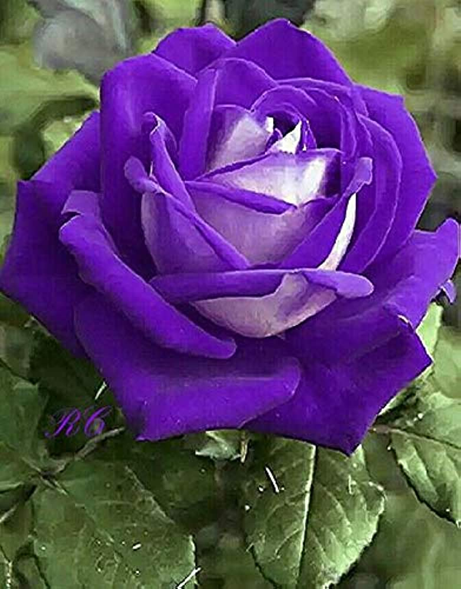
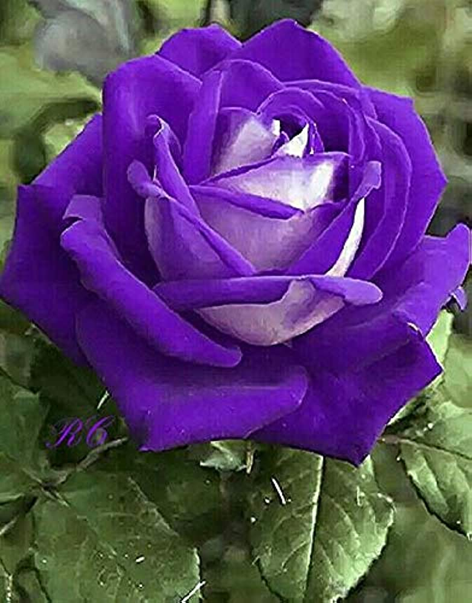
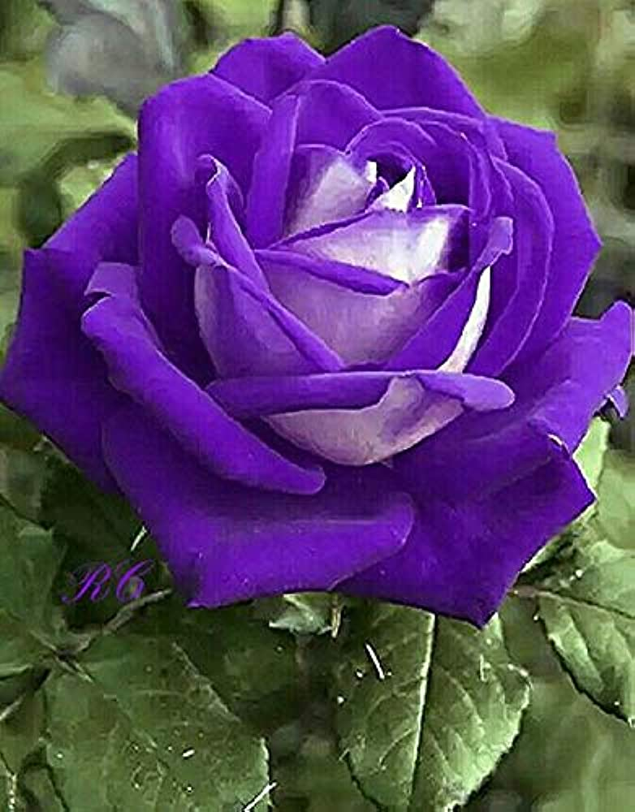
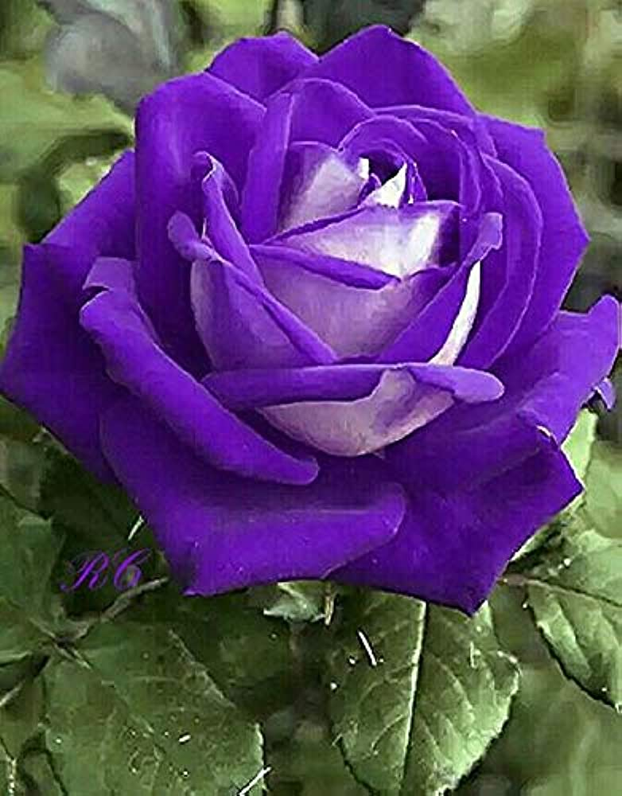

Roses are flowers with a rich scent. There are about 100 species, or types, of rose plant. They belong to the rose family of plants, called Rosaceae. Most roses grown in gardens and sold by florists are hybrid tea roses. Roses grow almost all over the world. The plants grow in the form of shrubs or vines. The stems usually have sharp thorns. The flowers vary in color and size. They come in shades of pink, red, orange, yellow, and white. They may be from 0.5 inch (1.3 centimeters) to 7 inches (18 centimeters) across. Wild roses usually have five petals. Roses grown by people often have many sets of petals. The petals grow out from a fleshy, fruitlike structure known as a hip. Roses make beautiful decorations. But roses have other uses besides being pretty. People use the fragrant oil from rose blossoms in perfumes. They also use rose hips to make jams and herbal teas. Rose hips are a rich source of vitamin C.
The national flower of a country should tie in with the culture, history and heritage of a nation. It is meant to reinforce the country’s image to the world and play a part in upholding the qualities that the nation holds true. The national flower of India is Lotus. It is an aquatic herb that is often termed as ‘Padma’ in Sanskrit and enjoys a sacred status among the Indian culture.